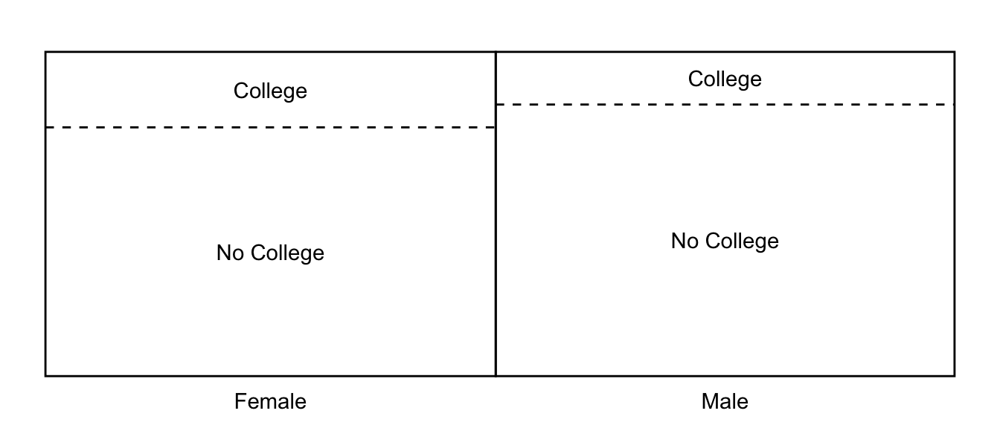
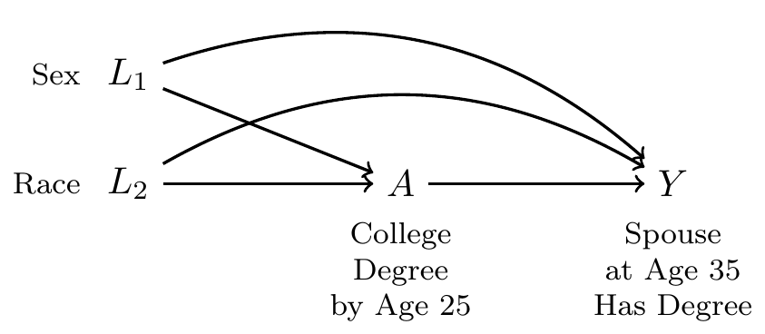
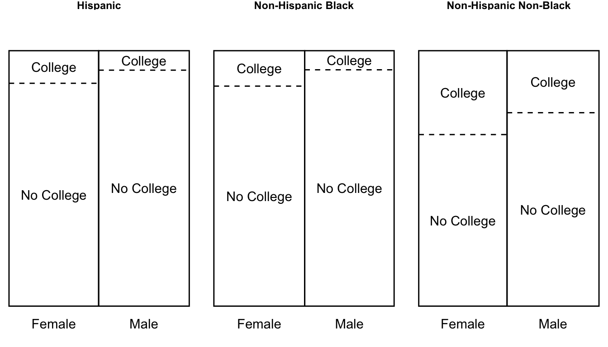
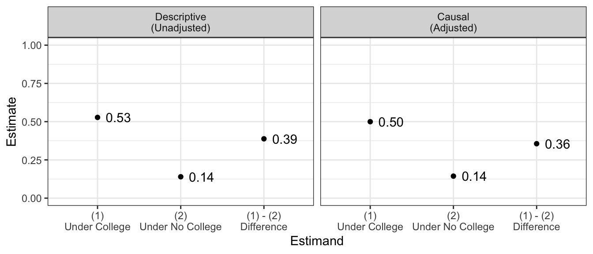
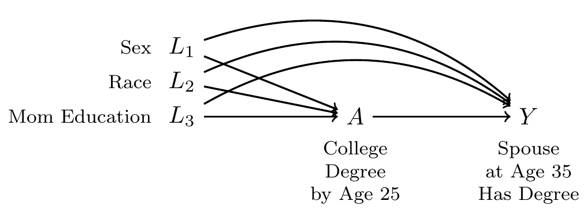
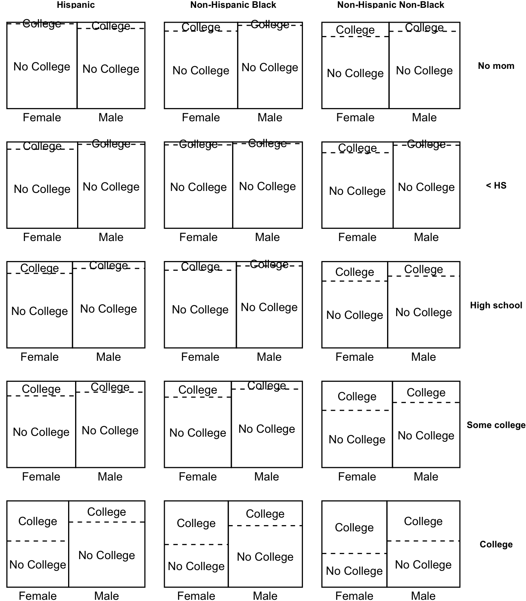
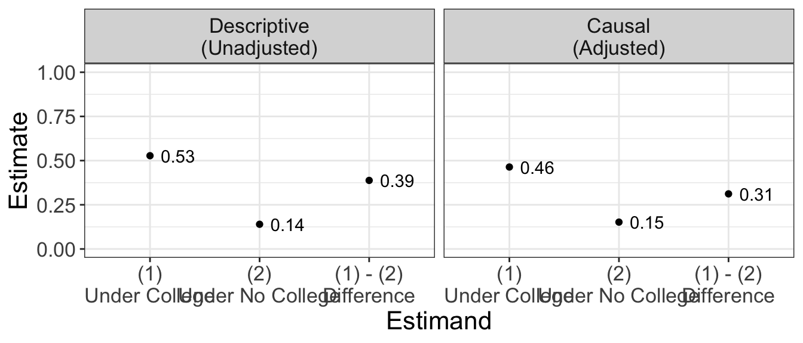
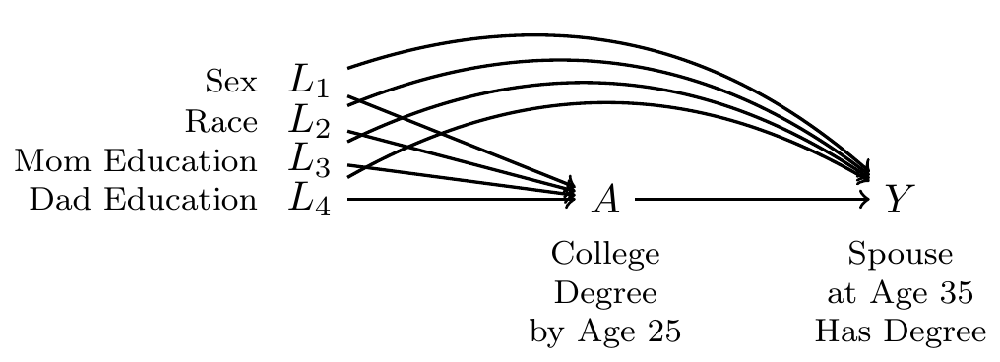
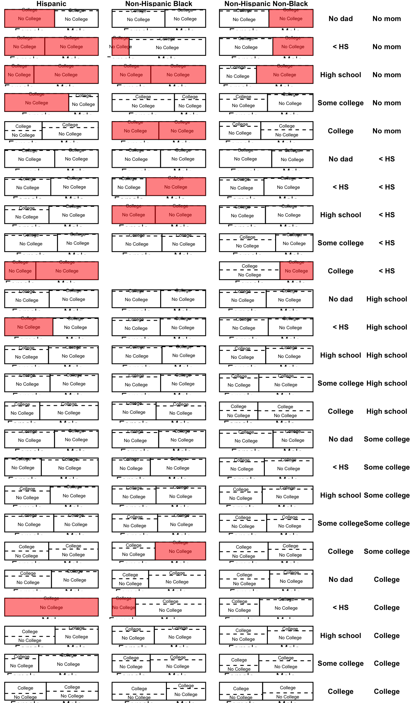
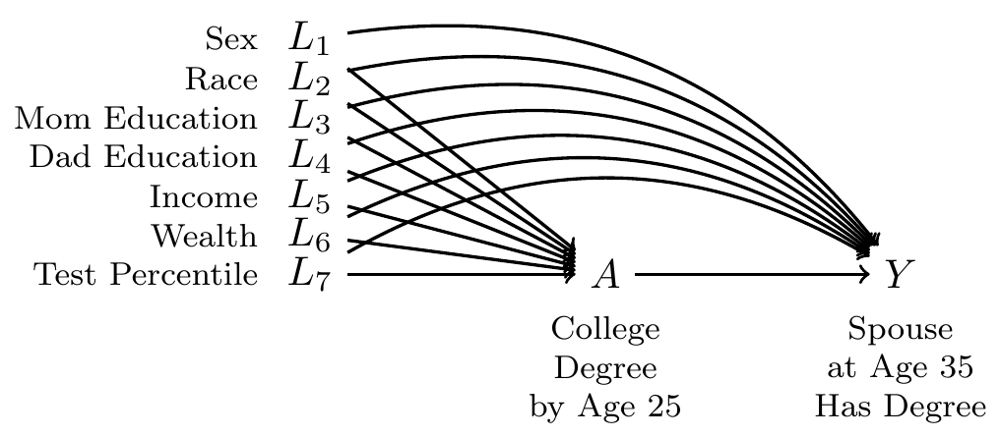

library(tidyverse)Why model?
Covered Feb 11. Here are slides. Lecture for today also includes the next page.
This page will help you
- explain the curse of dimensionality
- recognize the possible futility of nonparametric estimation
It motivates the model-based estimation that we will use in the next part of the course.
A motivating example
Sociologists who study household income inequality often focus on two mechanisms. First, incomes vary across individuals. Second, individuals pool together into households. The tendency of high-income individuals to marry other high-income individuals is thus an important process through which household income inequality arises.1
This page asks a question about the pooling of people together into households: To what degree does finishing college increase the probability of having a spouse who finished college?
Data
We use data from the National Longitudinal Survey of Youth 1997 (NLSY97). The NLSY97 is a probability sample of U.S. non-institutional civilian youths age 12–16 on Dec 31 1996 (\(n\) = 8,984). Sampled individuals were surveyed annually 1997–2011, then biennially.
If you would like to work with the data, you should first prepare your computer with some files from us:
- set your working directory where you will be working
- download two supporting files from us
nlsy97.NLSY97is a tagset file containing the variable namesprepare_nlsy97.Ris an R script to prepare the data
Now go to the data distributor
- Register with the survey
- Log in to the NLS Investigator
- Choose the NLSY97 study
- Upload the tagset
nlsy97.NLSY97that you downloaded from us - In the Investigator, download the data. Type to change the file name from
defaulttonlsy97 - Unzip the file. Drag
nlsy97.datinto the folder you will work in - In your R console, run the line of code below
- this will take about 30 seconds to run
- you will need these R packages:
tidyverseandAmelia
source("prepare_nlsy97.R")In the future, you can now load the data with
d <- readRDS("d.RDS")A DAG with one confounder
To draw a DAG, we first define our treatment and outcome variables
- Treatment \(A\): Finished BA by age 25
- Outcome \(Y\): Spouse or partner at age 30–40 holds a BA
- 0 if no spouse or partner, or partner with no BA
- 1 if spouse or partner holds a BA
With these two variables, we ask whether there are any other variables that are common ancestors of these two. One possibility is the sex of the respondent, \(L\).
If this were the only confounder, our adjustment procedure would be simple:
- Estimate within subgroups defined by {sex}
- Aggregate over the subgroups
The code below estimates within the subgroups
ybar_in_subgroups <- d |>
# Group by confounders and treatment
group_by(sex, a) |>
# Summarize mean outcomes and nber of cases
summarize(ybar = mean(y),
n = n(),
.groups = "drop") |>
pivot_wider(names_from = a,
values_from = c("ybar","n")) |>
print()# A tibble: 2 × 5
sex ybar_college ybar_no_college n_college n_no_college
<chr> <dbl> <dbl> <int> <int>
1 Female 0.467 0.102 896 2953
2 Male 0.614 0.174 637 3285Then we can aggregate over the subgroups, weighted by size.
ybar_in_subgroups |>
mutate(
conditional_effect = ybar_college - ybar_no_college,
n_in_stratum = n_college + n_no_college
) |>
select(sex, conditional_effect, n_in_stratum) |>
summarize(
population_average_effect = weighted.mean(
conditional_effect,
w = n_in_stratum
)
) |>
print()# A tibble: 1 × 1
population_average_effect
<dbl>
1 0.403The visualization below seeks to build intuitiomn for what we have just done. We split the population into two subgroups (left and right of the solid line). Within each subgroup, we took the mean outcome among those with and without college degrees (above and below dashed line), taking the difference as the effect of a college degree. Then we took the average across the left and right subgroups.

With two confounders
Sex may not be the only confounder. What if race also shapes access to college and the probability of having a college-educated spouse at age 35?

Our procedure would be analogous to the above:
- Estimate effects within subgroups defined by {sex, race}
- Aggregate over subgroups
The only difference is that now there are 6 subgroups (3 race categories \(\times\) 2 sex categories). Moving from one to two confounders multiplies the number of subgroups.

Below are the unadjusted estimates and the estimates adjusted for sex and race.

With three confounders
Sex and race are not likely to be a sufficient adjustment set. Our DAG should really include at least three confounders:

Proceeding as above, we can make a nonparametric estimate:
- Estimate effects within subgroups defined by {race,sex, mom education}
- Aggregate over subgroups
The number of subgroups is starting to get quite large!


With four confounders
Now we suppose that dad’s education is also a confounder.

The procedure still holds:
- Estimate effects within subgroups defined by {race,sex, mom education, dad education}
- Aggregate over subgroups
but the number of subgroups is now very many.
Now we have a problem. Some subgroups (highlighted in red) are unpopulated: there are no sampled units in these subgroups. The problem of unpopulated cells happens because we have many confounders, so that there are a huge number of subgroups. This problem is known as the curse of dimensionality.

Curse of dimensionality: Unpopulated cells
The curse of dimensionality is that the number of subgroups grows multiplicatively with the number of predictors. Nonparametric estimation (estimation by subgroup means) quickly becomes infeasible as the number of subgroups explodes.
In fact, in our example, 4.2% of the sample is in a subgroup where there are either zero people with college degrees or zero people without college degrees.
To make conditional exchangeability plausible, social scientists often have to draw a DAG with numerous confounding variables.

But when we add tons of variables, we have an ever-increasing problem of empty cells. With the above DAG, 100% of the sample falls in a cell where either everyone is treated or everyone is untreated.
Models to the rescue
In many real research settings, the curse of dimensionality makes it impossible to estimate nonparametrically by subgroup means. With more than a few confounders, there are simply too many subgroups and not enough sampled cases to populate them.
A model is the solution to this problem. A model is a statistical approach to pool information across units who fall in different subgroups, thereby allowing us to make inference even in subgroups where no units are observed. The next page introduces models through a simple descriptive example, and then we will return to causal examples to see how models can help us to answer causal questions.
If you would like to read more, you might see Hernán & Robins Ch 11.